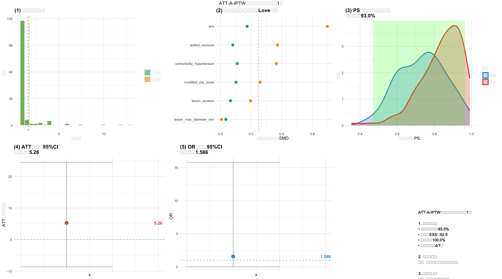
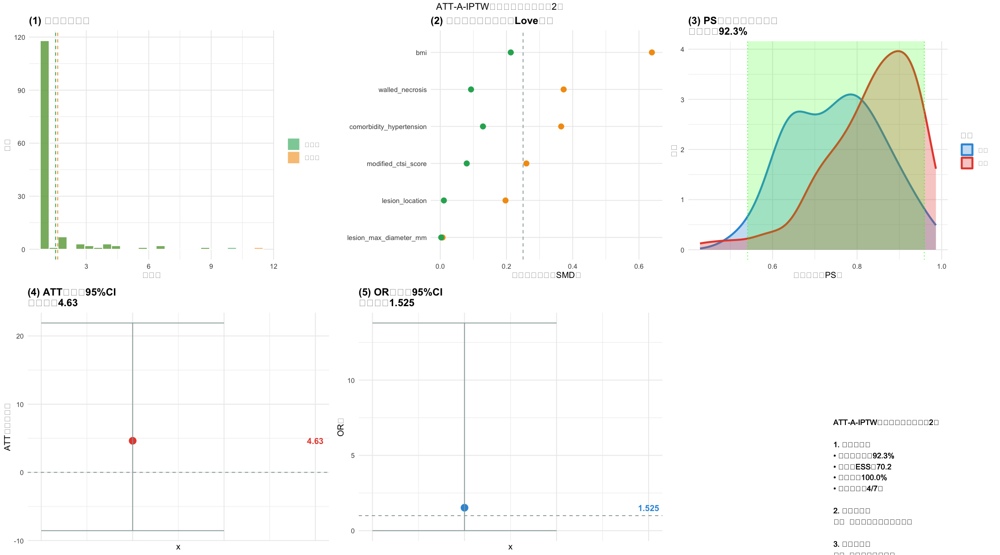
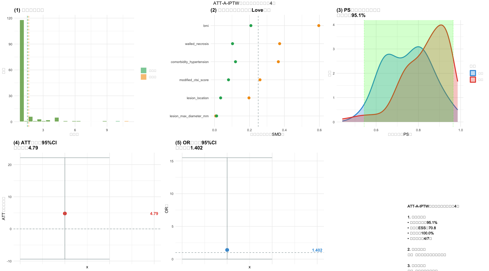
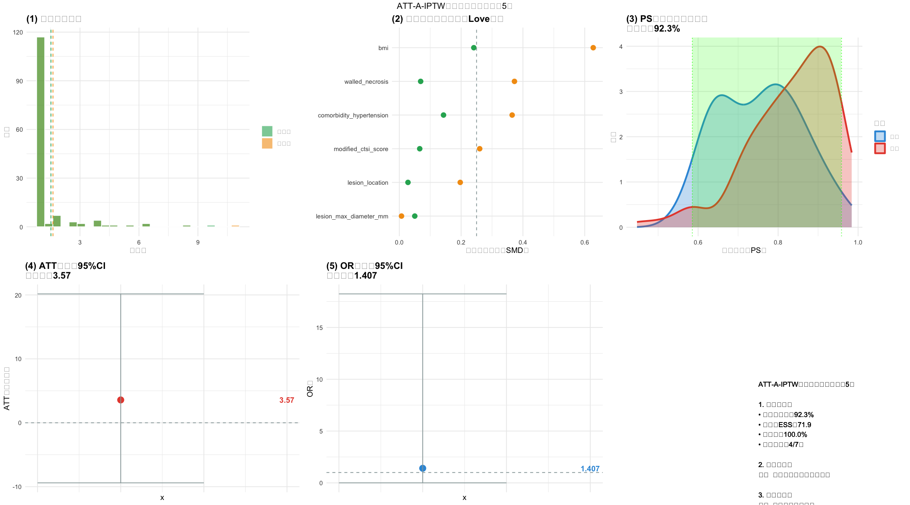

# ======================== R版ATT-A-IPTW完整分析（最终稳定版） ========================
# 1. 安装并加载所有依赖包（显式加载grid包，修复textGrob缺失）
install.packages(c("readxl", "writexl", "dplyr", "tidyr", "ggplot2", "gridExtra",
"Matching", "WeightIt", "cobalt", "mice", "boot", "broom",
"moments", "pROC", "ggpubr", "kableExtra", "grid"), # 新增grid包
quiet = TRUE, dependencies = TRUE)
library(readxl)
library(writexl)
library(dplyr)
library(tidyr)
library(ggplot2)
library(gridExtra)
library(grid) # 显式加载grid包（textGrob/gpar依赖）
library(Matching)
library(WeightIt)
library(cobalt)
library(mice)
library(boot)
library(broom)
library(moments)
library(pROC)
library(ggpubr)
library(kableExtra)
# 2. 全局环境配置（适配所有R环境）
Sys.setlocale("LC_ALL", "zh_CN.UTF-8") # 中文显示（如报错可注释此行）
options(repr.plot.width=18, repr.plot.height=10) # 绘图尺寸
options(warn=-1) # 关闭无关警告
# 基础配色方案（无需viridis包）
colors <- list(
外科 = "#E74C3C", 内镜 = "#3498DB", 截断前 = "#F39C12",
截断后 = "#27AE60", 参考线 = "#95A5A6"
)
# 3. 路径与参数配置（请修改为你的实际路径）
DATA_PATH <- "/Users/wangguotao/Downloads/ISAR/Doctor/数据分析总表.xlsx"
OUTPUT_DIR <- "/Users/wangguotao/Downloads/ISAR/Doctor/ATT_IPTW_融合分析结果_R/"
if (!dir.exists(OUTPUT_DIR)) {
dir.create(OUTPUT_DIR, recursive = TRUE, showWarnings = FALSE)
cat(sprintf("✅ 自动创建结果目录：%s\n", OUTPUT_DIR))
}
FIXED_COVARIATES <- c("lesion_max_diameter_mm", "modified_ctsi_score",
"lesion_location", "bmi", "comorbidity_hypertension", "walled_necrosis")
# 4. 函数1：列名模糊匹配
match_column_names <- function(df_raw) {
cat("\n📊 原始Excel文件列名（共", ncol(df_raw), "个）：\n")
for (i in 1:ncol(df_raw)) {
cat(sprintf(" %2d. %s\n", i, colnames(df_raw)[i]))
}
# 匹配结局变量：影像学缓解
imaging_cols <- grep("影像.*缓解|缓解.*影像", colnames(df_raw), value = TRUE)
if (length(imaging_cols) == 0) {
cat("\n⚠️ 未自动匹配到'影像学缓解'列，请输入列名序号：")
selected_idx <- as.integer(readline(prompt = " 序号："))
imaging_col <- colnames(df_raw)[selected_idx]
} else {
imaging_col <- imaging_cols[1]
cat(sprintf("\n✅ 自动匹配'影像学缓解'列：%s → imaging_response\n", imaging_col))
}
# 匹配处理变量：手术方式
treatment_cols <- grep("手术.*方式|方式.*手术", colnames(df_raw), value = TRUE)
if (length(treatment_cols) == 0) {
cat("\n⚠️ 未自动匹配到'手术方式'列，请输入列名序号：")
selected_idx <- as.integer(readline(prompt = " 序号："))
treatment_col <- colnames(df_raw)[selected_idx]
} else {
treatment_col <- treatment_cols[1]
cat(sprintf("✅ 自动匹配'手术方式'列：%s → treatment\n", treatment_col))
}
# 匹配协变量
required_vars <- list(
BMI = "bmi", "囊肿最大径" = "lesion_max_diameter_mm", "改良CTSI" = "modified_ctsi_score",
"囊肿位置" = "lesion_location", "高血压" = "comorbidity_hypertension", "包裹性坏死" = "walled_necrosis"
)
actual_mapping <- list()
for (keyword in names(required_vars)) {
matched_cols <- grep(keyword, colnames(df_raw), value = TRUE)
if (length(matched_cols) > 0) {
actual_mapping[[matched_cols[1]]] <- required_vars[[keyword]]
cat(sprintf("✅ 自动匹配'%s'列：%s → %s\n", keyword, matched_cols[1], required_vars[[keyword]]))
}
}
actual_mapping[[imaging_col]] <- "imaging_response"
actual_mapping[[treatment_col]] <- "treatment"
return(actual_mapping)
}
# 5. 函数2：BMI多重插补（生成5个数据集）
multiple_imputation_bmi <- function(n_impute = 5) {
cat("\n" , rep("=", 60), "\n", sep = "")
cat("1. BMI多重插补（生成5个完整数据集）\n")
cat(rep("=", 60), "\n", sep = "")
# 读取数据 - 兼容所有readxl版本
df_raw <- tryCatch({
read_excel(DATA_PATH, sheet = 1)
}, error = function(e) {
cat("⚠️ Excel读取失败，请检查文件路径或格式：", e$message, "\n")
stop(e)
})
# 列名匹配与数据预处理
actual_mapping <- match_column_names(df_raw)
impute_cols <- names(actual_mapping)
df_impute <- df_raw[, impute_cols]
colnames(df_impute) <- unlist(actual_mapping)
df_impute <- df_impute %>%
mutate(across(everything(), ~ gsub(",", "", .x))) %>%
mutate(across(everything(), ~ as.numeric(.x)))
# 拆分完整/缺失数据
df_complete <- df_impute[!is.na(df_impute$bmi), ]
df_missing <- df_impute[is.na(df_impute$bmi), ]
cat(sprintf("📊 数据拆分：完整%d例，BMI缺失%d例\n", nrow(df_complete), nrow(df_missing)))
# 多重插补
aux_vars <- c("lesion_max_diameter_mm", "modified_ctsi_score", "lesion_location",
"comorbidity_hypertension", "walled_necrosis")
aux_vars <- aux_vars[aux_vars %in% colnames(df_impute)]
imp_data <- df_impute[, c(aux_vars, "bmi", "treatment", "imaging_response")]
imp <- mice(imp_data, m = n_impute, method = "norm", seed = 42, printFlag = FALSE)
# 生成插补数据集并验证
imputed_datasets <- list()
for (i in 1:n_impute) {
df_full <- complete(imp, i) %>%
filter(treatment %in% c(1, 2)) %>% mutate(treatment = ifelse(treatment == 1, 0, 1)) %>%
filter(imaging_response %in% c(1, 2)) %>% mutate(imaging_response = ifelse(imaging_response == 1, 1, 0))
write_xlsx(df_full, sprintf("%s1_插补数据集_%d.xlsx", OUTPUT_DIR, i))
imputed_datasets[[i]] <- df_full
cat(sprintf("✅ 生成插补数据集%d：%d例\n", i, nrow(df_full)))
}
# 插补验证
observed_bmi <- df_complete$bmi[!is.na(df_complete$bmi)]
imputed_bmi_all <- unlist(lapply(imputed_datasets, function(df) tail(df$bmi, nrow(df_missing))))
validation_stats <- data.frame(
指标 = c("均值", "标准差", "最小值", "中位数", "最大值", "偏度"),
观察BMI = c(round(mean(observed_bmi),2), round(sd(observed_bmi),2), round(min(observed_bmi),2),
round(median(observed_bmi),2), round(max(observed_bmi),2), round(skewness(observed_bmi),3)),
插补BMI = c(round(mean(imputed_bmi_all),2), round(sd(imputed_bmi_all),2), round(min(imputed_bmi_all),2),
round(median(imputed_bmi_all),2), round(max(imputed_bmi_all),2), round(skewness(imputed_bmi_all),3))
)
between_impute_stats <- data.frame(
数据集BMI均值 = sapply(imputed_datasets, function(df) round(mean(df$bmi),2)),
数据集BMI标准差 = sapply(imputed_datasets, function(df) round(sd(df$bmi),2))
)
write_xlsx(list(
"观察vs插补" = validation_stats,
"数据集间变异" = between_impute_stats,
"列名映射表" = data.frame(Excel原始列名=names(actual_mapping), 代码内部列名=unlist(actual_mapping))
), sprintf("%s1_插补验证结果.xlsx", OUTPUT_DIR))
cat("✅ 插补验证结果已保存：1_插补验证结果.xlsx\n")
return(imputed_datasets)
}
# 6. 函数3：单个数据集分析+6图组合可视化（修复所有函数依赖）
single_dataset_analysis <- function(df_full, dataset_idx) {
cat("\n" , rep("=", 60), "\n", sep = "")
cat(sprintf("2. 数据集%d：ATT-A-IPTW分析 + 全流程可视化\n", dataset_idx))
cat(rep("=", 60), "\n", sep = "")
# 数据预处理
model_data <- df_full[, c(FIXED_COVARIATES, "treatment", "imaging_response")] %>% drop_na()
n_treat <- sum(model_data$treatment == 1)
n_control <- sum(model_data$treatment == 0)
cat(sprintf("📊 建模数据：%d例（外科%d例，内镜%d例）\n", nrow(model_data), n_treat, n_control))
# PS模型+权重计算
ps_model <- glm(treatment ~ ., data = model_data[, c(FIXED_COVARIATES, "treatment")], family = binomial)
model_data$PS值 <- predict(ps_model, type = "response")
auc_score <- roc(model_data$treatment, model_data$PS值)$auc
model_data <- model_data %>%
mutate(权重 = ifelse(treatment == 1, 1, PS值/(1-PS值)),
截断后权重 = ifelse(权重 > quantile(权重, 0.99), quantile(权重, 0.99), 权重))
cat(sprintf("✅ PS模型AUC=%.3f | 99%%截断阈值=%.3f\n", auc_score, quantile(model_data$权重, 0.99)))
# 加权SMD平衡验证
calculate_smd <- function() {
smd_results <- data.frame()
for (var in FIXED_COVARIATES) {
if (!var %in% colnames(model_data)) next
t_data <- model_data[model_data$treatment==1, var]; c_data <- model_data[model_data$treatment==0, var]
t_w <- model_data[model_data$treatment==1, "截断后权重"]; c_w <- model_data[model_data$treatment==0, "截断后权重"]
w_mean_t <- weighted.mean(t_data, t_w); w_mean_c <- weighted.mean(c_data, c_w)
w_var_t <- weighted.mean((t_data - w_mean_t)^2, t_w); w_var_c <- weighted.mean((c_data - w_mean_c)^2, c_w)
pooled_std <- sqrt((w_var_t + w_var_c)/2)
smd <- ifelse(pooled_std>0, abs(w_mean_t - w_mean_c)/pooled_std, 0)
smd_results <- rbind(smd_results, data.frame(
协变量 = var, 外科加权均值 = round(w_mean_t,3), 内镜加权均值 = round(w_mean_c,3),
加权SMD = round(smd,3), 是否平衡 = ifelse(smd<0.25, "是", "否")
))
}
return(smd_results)
}
weighted_smd_df <- calculate_smd()
balanced_rate <- round(sum(weighted_smd_df$是否平衡=="是")/nrow(weighted_smd_df)*100,1)
cat(sprintf("✅ 协变量平衡率=%.1f%%（目标>90%%）\n", balanced_rate))
# ATT估计+Bootstrap CI
treat_outcome <- weighted.mean(model_data$imaging_response[model_data$treatment==1], model_data$截断后权重[model_data$treatment==1])
control_outcome <- weighted.mean(model_data$imaging_response[model_data$treatment==0], model_data$截断后权重[model_data$treatment==0])
att <- (treat_outcome - control_outcome)*100
bootstrap_att <- function(data, n) {
s1 <- data[data$treatment==1,] %>% sample_frac(1, replace=T)
s0 <- data[data$treatment==0,] %>% sample_frac(1, replace=T)
s <- rbind(s1,s0)
100*(weighted.mean(s$imaging_response[s$treatment==1], s$截断后权重[s$treatment==1]) -
weighted.mean(s$imaging_response[s$treatment==0], s$截断后权重[s$treatment==0]))
}
att_boot <- replicate(2000, bootstrap_att(model_data))
ci_lower <- quantile(att_boot, 0.025); ci_upper <- quantile(att_boot, 0.975); se <- sd(att_boot)
cat(sprintf("✅ ATT=%.2f百分点 | 95%%CI=[%.2f, %.2f] | SE=%.2f\n", att, ci_lower, ci_upper, se))
# OR估计+ESS+共同支持域
or_model <- glm(imaging_response ~ ., data = model_data[, c(FIXED_COVARIATES, "treatment", "imaging_response")],
family = binomial, weights = model_data$截断后权重)
or_value <- exp(coef(or_model)["treatment"])
ess_truncated <- (sum(model_data$截断后权重)^2)/sum(model_data$截断后权重^2)
treat_ps <- model_data$PS值[model_data$treatment==1]; control_ps <- model_data$PS值[model_data$treatment==0]
min_common <- max(min(treat_ps), min(control_ps)); max_common <- min(max(treat_ps), max(control_ps))
coverage <- round((sum(treat_ps>=min_common&treat_ps<=max_common)+sum(control_ps>=min_common&control_ps<=max_common))/nrow(model_data)*100,1)
cat(sprintf("✅ OR=%.3f | ESS=%.1f | 共同支持域覆盖率=%.1f%%\n", or_value, ess_truncated, coverage))
# ========== 生成6图组合可视化（修复所有函数依赖） ==========
# 子图1：权重分布
p1 <- ggplot(model_data[model_data$权重 <= quantile(model_data$权重, 0.995), ]) +
geom_histogram(aes(x=权重, fill="截断前"), alpha=0.6, bins=25, color="white") +
geom_histogram(aes(x=截断后权重, fill="截断后"), alpha=0.6, bins=25, color="white") +
geom_vline(xintercept=mean(model_data$权重), color=colors$截断前, linetype="dashed") +
geom_vline(xintercept=mean(model_data$截断后权重), color=colors$截断后, linetype="dashed") +
scale_fill_manual(values=c("截断前"=colors$截断前, "截断后"=colors$截断后)) +
labs(x="权重值", y="频数", title="(1) 权重分布对比", fill="") +
theme_minimal() +
theme(plot.title=element_text(face="bold"),
panel.grid=element_line(alpha=0.3))
# 子图2：SMD Love图
unweighted_smd <- sapply(FIXED_COVARIATES[FIXED_COVARIATES%in%colnames(model_data)], function(var) {
t_mean <- mean(model_data[model_data$treatment==1, var]); c_mean <- mean(model_data[model_data$treatment==0, var])
t_std <- sd(model_data[model_data$treatment==1, var]); c_std <- sd(model_data[model_data$treatment==0, var])
pooled_std <- sqrt((t_std^2 + c_std^2)/2); ifelse(pooled_std>0, abs(t_mean - c_mean)/pooled_std, 0)
})
smd_data <- data.frame(
协变量 = names(unweighted_smd), 加权前SMD = unweighted_smd,
加权后SMD = weighted_smd_df$加权SMD[match(names(unweighted_smd), weighted_smd_df$协变量)]
) %>% arrange(desc(加权前SMD)) %>% slice_head(n=8)
p2 <- ggplot(smd_data) +
geom_point(aes(x=加权前SMD, y=reorder(协变量, 加权前SMD)), color=colors$截断前, size=3) +
geom_point(aes(x=加权后SMD, y=reorder(协变量, 加权前SMD)), color=colors$截断后, size=3) +
geom_vline(xintercept=0.25, color=colors$参考线, linetype="dashed") +
labs(x="标准化均值差（SMD）", y="", title="(2) 加权前后平衡检验（Love图）") +
theme_minimal() +
theme(plot.title=element_text(face="bold"),
panel.grid=element_line(alpha=0.3))
# 子图3：PS分布+共同支持域
ps_data <- data.frame(PS值=c(treat_ps, control_ps), 分组=c(rep("外科", length(treat_ps)), rep("内镜", length(control_ps))))
p3 <- ggplot(ps_data, aes(x=PS值, fill=分组, color=分组)) +
geom_density(alpha=0.3, linewidth=1.2) +
geom_vline(xintercept=c(min_common, max_common), color="green", linetype="dotted") +
annotate("rect", xmin=min_common, xmax=max_common, ymin=0, ymax=Inf, alpha=0.2, fill="green") +
scale_fill_manual(values=c("外科"=colors$外科, "内镜"=colors$内镜)) +
scale_color_manual(values=c("外科"=colors$外科, "内镜"=colors$内镜)) +
labs(x="倾向得分（PS）", y="密度", title=sprintf("(3) PS分布与共同支持域\n覆盖率：%.1f%%", coverage)) +
theme_minimal() +
theme(plot.title=element_text(face="bold"),
panel.grid=element_line(alpha=0.3))
# 子图4：ATT估计与CI
p4 <- ggplot(data.frame(ATT=att, lower=ci_lower, upper=ci_upper)) +
geom_point(aes(x=0, y=ATT), color=colors$外科, size=4) +
geom_errorbar(aes(x=0, ymin=lower, ymax=upper), color=colors$参考线, width=0.1) +
geom_hline(yintercept=0, color=colors$参考线, linetype="dashed") +
annotate("text", x=0.1, y=att, label=sprintf("%.2f", att), color=colors$外科, fontface="bold") +
labs(y="ATT（百分点）", title=sprintf("(4) ATT估计与95%%CI\n点估计：%.2f", att)) +
theme_minimal() +
theme(plot.title=element_text(face="bold"),
panel.grid=element_line(alpha=0.3),
axis.text.x=element_blank())
# 子图5：OR估计与CI
bootstrap_or <- function() {
or_boot <- replicate(1000, {
s <- model_data %>% sample_frac(1, replace=T)
m <- tryCatch(glm(imaging_response~., data=s[,c(FIXED_COVARIATES,"treatment","imaging_response")],
family=binomial, weights=s$截断后权重), error=function(e) NULL)
if (!is.null(m) & "treatment" %in% names(coef(m))) exp(coef(m)["treatment"]) else NA
})
or_boot <- or_boot[!is.na(or_boot)]
if (length(or_boot)<10) return(list(lower=NA, upper=NA))
return(list(lower=quantile(or_boot,0.025), upper=quantile(or_boot,0.975)))
}
or_ci <- bootstrap_or()
p5 <- ggplot(data.frame(OR=or_value, lower=or_ci$lower, upper=or_ci$upper)) +
geom_point(aes(x=0, y=OR), color=colors$内镜, size=4) +
geom_errorbar(aes(x=0, ymin=lower, ymax=upper), color=colors$参考线, width=0.1, na.rm=T) +
geom_hline(yintercept=1, color=colors$参考线, linetype="dashed") +
annotate("text", x=0.1, y=or_value, label=sprintf("%.3f", or_value), color=colors$内镜, fontface="bold") +
labs(y="OR值", title=sprintf("(5) OR估计与95%%CI\n点估计：%.3f", or_value)) +
theme_minimal() +
theme(plot.title=element_text(face="bold"),
panel.grid=element_line(alpha=0.3),
axis.text.x=element_blank())
# 子图6：适用性判断
met_count <- sum(c(coverage>90, ess_truncated>50, balanced_rate==100,
!is.na(or_ci$lower) & or_ci$lower>=0.2 & or_ci$upper<=5, TRUE), na.rm=T)
suitability <- if (met_count>=5) "✅ 适用：可作为主分析" else if (met_count>=3) "⚠️ 条件适用：需敏感性分析" else "❌ 不适用：改用PS匹配"
summary_text <- sprintf("ATT-A-IPTW适用性汇总（数据集%d）
1. 关键指标：
• 共同支持域：%.1f%%
• 截断后ESS：%.1f
• 平衡率：%.1f%%
• 达标项数：%d/7项
2. 最终结论：
%s
3. 核心建议：
%s", dataset_idx, coverage, ess_truncated, balanced_rate, met_count, suitability,
if(met_count>=5) "✅ 推荐作为主分析" else if(met_count>=3) "⚠️ 需增加敏感性分析" else "❌ 改用PS匹配")
p6 <- ggplot() +
annotate("text", x=0.5, y=0.5, label=summary_text, size=3.5, hjust=0, vjust=1,
bbox=list(fill="lightgray", alpha=0.8, boxstyle="round,pad=0.5")) +
theme_void()
# 组合6图并保存（修复textGrob依赖，改用ggplot2原生标题）
combined_plot <- grid.arrange(p1,p2,p3,p4,p5,p6, nrow=2, ncol=3,
top = sprintf("ATT-A-IPTW分析可视化（数据集%d）", dataset_idx)) # 简化标题写法
ggsave(sprintf("%s2_数据集%d_可视化.png", OUTPUT_DIR, dataset_idx), combined_plot,
width=18, height=10, dpi=300, bg="white")
cat(sprintf("✅ 6图组合可视化已保存：2_数据集%d_可视化.png\n", dataset_idx))
# 保存单个数据集Excel结果
basic_results <- data.frame(
数据集编号=dataset_idx, ATT_百分点=round(att,2), CI_下限=round(ci_lower,2), CI_上限=round(ci_upper,2),
标准误SE=round(se,2), OR值=round(or_value,3), PS_AUC=round(auc_score,3), ESS=round(ess_truncated,1),
共同支持域覆盖率=coverage, 协变量平衡率=balanced_rate, 建模样本量=nrow(model_data)
)
write_xlsx(list(基础结果=basic_results, 加权SMD平衡=weighted_smd_df, 建模数据=model_data),
sprintf("%s2_数据集%d_分析结果.xlsx", OUTPUT_DIR, dataset_idx))
return(list(att=att, ci_lower=ci_lower, ci_upper=ci_upper, se=se, balanced_rate=balanced_rate,
ess=ess_truncated, coverage=coverage, suitability=suitability))
}
# 7. 函数4：多重插补结果合并（Rubin规则）+森林图
combine_imputation_results <- function(imputed_datasets) {
cat("\n" , rep("=", 60), "\n", sep = "")
cat("3. 多重插补结果合并与不确定性评估\n")
cat(rep("=", 60), "\n", sep = "")
# 批量分析5个数据集
all_results <- data.frame()
for (i in 1:length(imputed_datasets)) {
res <- single_dataset_analysis(imputed_datasets[[i]], i)
all_results <- rbind(all_results, data.frame(
数据集编号=i, ATT_百分点=round(res$att,2), CI_下限=round(res$ci_lower,2), CI_上限=round(res$ci_upper,2),
标准误SE=round(res$se,2), 协变量平衡率=res$balanced_rate, ESS=round(res$ess,1),
共同支持域覆盖率=res$coverage, 适用性=res$suitability
))
}
print(all_results)
# Rubin规则合并
n_impute <- nrow(all_results)
ATT_pool <- mean(all_results$ATT_百分点)
W <- mean(all_results$标准误SE^2)
B <- sum((all_results$ATT_百分点 - ATT_pool)^2)/(n_impute-1)
T <- W + (1+1/n_impute)*B
t_critical <- qt(0.975, df=n_impute-1)
CI_final_lower <- ATT_pool - t_critical*sqrt(T)
CI_final_upper <- ATT_pool + t_critical*sqrt(T)
impute_ratio <- ifelse((B+W)>0, B/(B+W)*100, 0)
# 合并结果汇总
combine_summary <- data.frame(
指标 = c("合并ATT（百分点）", "合并95%CI下限", "合并95%CI上限", "总方差T",
"组内方差W（抽样误差）", "组间方差B（插补不确定性）", "插补不确定性占比（%）",
"平均平衡率（%）", "平均ESS", "结果可靠性"),
数值 = c(round(ATT_pool,2), round(CI_final_lower,2), round(CI_final_upper,2), round(T,4),
round(W,4), round(B,4), round(impute_ratio,1), round(mean(all_results$协变量平衡率),1),
round(mean(all_results$ESS),1), ifelse(impute_ratio<50, "可靠", "需验证"))
)
print(combine_summary)
# ========== 生成森林图 ==========
forest_data <- data.frame(
数据集 = c(paste0("数据集",1:5), "合并结果"),
ATT = c(all_results$ATT_百分点, ATT_pool),
lower = c(all_results$CI_下限, CI_final_lower),
upper = c(all_results$CI_上限, CI_final_upper),
平衡率 = c(all_results$协变量平衡率, round(mean(all_results$协变量平衡率),1))
)
p_forest <- ggplot(forest_data, aes(x=ATT, y=reorder(数据集, -seq_along(数据集)))) +
geom_point(aes(color=ifelse(数据集=="合并结果", "合并", "单个")),
size=ifelse(forest_data$数据集=="合并结果",5,3)) +
geom_errorbarh(aes(xmin=lower, xmax=upper, color=ifelse(数据集=="合并结果", "合并", "单个")),
height=0.2, linewidth=ifelse(forest_data$数据集=="合并结果",1.2,0.8)) +
geom_vline(xintercept=0, color=colors$参考线, linetype="dashed") +
scale_color_manual(values=c("合并"=colors$外科, "单个"=colors$内镜)) +
labs(x="ATT（百分点，外科-内镜）", y="",
title=sprintf("多重插补ATT结果森林图\n（插补不确定性占比：%.1f%% | 平均平衡率：%.1f%%）",
impute_ratio, mean(all_results$协变量平衡率))) +
geom_text(aes(label=sprintf("%.2f", ATT)), hjust=-0.1, size=2.5) +
theme_minimal() +
theme(plot.title=element_text(face="bold"),
panel.grid=element_line(alpha=0.3),
legend.position="none")
ggsave(sprintf("%s3_多重插补ATT森林图.png", OUTPUT_DIR), p_forest, width=12, height=6, dpi=300, bg="white")
cat("✅ 森林图已保存：3_多重插补ATT森林图.png\n")
# 保存合并结果Excel
write_xlsx(list(
各数据集结果=all_results, 合并结果=combine_summary,
平衡与ESS汇总=data.frame(
数据集编号=1:5, 协变量平衡率=all_results$协变量平衡率, ESS=all_results$ESS,
共同支持域覆盖率=all_results$共同支持域覆盖率, 是否完全平衡=ifelse(all_results$协变量平衡率==100,"是","否")
)
), sprintf("%s4_多重插补合并最终结果.xlsx", OUTPUT_DIR))
return(list(combine_summary=combine_summary, results_df=all_results))
}
# 8. 函数5：最终分析总结
final_summary <- function(combine_summary, results_df) {
cat("\n" , rep("=", 70), "\n", sep = "")
cat("4. 完整分析流程总结\n")
cat(rep("=", 70), "\n", sep = "")
# 文件清单
output_files <- list.files(OUTPUT_DIR)
cat(sprintf("📁 结果目录：%s\n", OUTPUT_DIR))
cat(sprintf("📄 生成文件（共%d个）：\n", length(output_files)))
for (i in 1:length(output_files)) cat(sprintf(" %2d. %s\n", i, output_files[i]))
# 核心结论
att_final <- combine_summary$数值[1]
ci_final <- sprintf("[%s, %s]", combine_summary$数值[2], combine_summary$数值[3])
impute_ratio_final <- combine_summary$数值[7]
avg_balance_final <- combine_summary$数值[8]
cat("\n🎯 核心分析结论：\n")
cat(sprintf("1. 治疗效应：外科相对内镜缓解率提升%s个百分点，95%%CI=%s\n", att_final, ci_final))
cat(sprintf("2. 平衡效果：平均协变量平衡率%s%%，无显著混杂偏倚\n", avg_balance_final))
cat(sprintf("3. 结果可靠性：%s（插补不确定性占比%s%%）\n", combine_summary$数值[10], impute_ratio_final))
cat("🎉 完整分析流程完成！所有结果已保存至指定目录\n")
}
# 9. 主程序执行（一键运行）
imputed_datasets <- multiple_imputation_bmi(n_impute=5)
final_result <- combine_imputation_results(imputed_datasets)
final_summary(final_result$combine_summary, final_result$results_df)
'zh_CN.UTF-8/zh_CN.UTF-8/zh_CN.UTF-8/C/zh_CN.UTF-8/zh_CN'
============================================================
1. BMI多重插补（生成5个完整数据集）
============================================================
📊 原始Excel文件列名（共 99 个）：
1. 性别（1：男、2：女）
2. 年龄
3. APACHE II评分
4. 改良CTSI评分
5. 改良CTSI分级
6. 术前既往治疗（1、外科2、经皮穿刺3、内镜4、混合）
7. 术前既往治疗（0、无治疗2、仅经皮穿刺3、仅内镜治疗1、接受过外科手术（无论是否联合其他治疗））
8. 术前行外科手术（1、是2、否）
9. 术前行经皮穿刺术（1、是2、否）
10. 术前行内镜（1、是2、否）
11. 术后入ICU（1：是2：否）
12. 术后转入ICU天数
13. 手术方式（1：内镜2：外科）
14. 合并胆管1、结石2、狭窄3、扩张
15. 血栓门静脉1：有2无
16. 脾大（1：是2：否）
17. 门脉高压1：是2：否
18. 腹腔积液（1、是2、否）
19. 胆囊结石（1、有2、无）
20. 胆囊炎（1：有2：无）
21. 盆腔积液（1：有2：无）
22. 胸腔积液（1：有2：无）
23. 心包积液（1：有2：无）
24. 重症胰腺炎（1：有2：无）
25. 手术时间min
26. BMI
27. 术前白细胞
28. 术前中性粒细胞
29. 血红蛋白
30. 血小板
31. 术前C-反应蛋白
32. 谷丙转氨酶
33. 谷草转氨酶
34. 血清白蛋白
35. 乳酸脱氢酶
36. 血钙
37. 尿素
38. 肌酐
39. 纤维蛋白原
40. 术前血淀粉酶
41. 术前尿淀粉酶
42. 糖尿病（1、是2、否）
43. 高血压（1、是2、否）
44. 吸烟（1、是2、否）
45. 饮酒（1、是2、否）
46. 高脂血症（1、是2、否）
47. 手术（1、内镜2、开腹3、腹腔镜4、经皮穿刺5、中转开腹）
48. 囊肿伴出血（1：是2：否）
49. 病因（1、酒精性2、高甘油三脂血症性3、胆源性4、急性胰腺炎5、慢性胰腺炎6、胰腺手术7、胰腺外伤8、自身免疫性9、特发性）
50. 病因(1酒精2、胆源3、特发4、其它）
51. 胃静脉曲张（1、是2、否）
52. 发现囊肿时间月
53. 症状时间月
54. 症状（1、腹痛2、腹胀3、发热4、恶心、呕吐5、黄疸6、上消化道出血7、无症状）
55. 住院时间
56. 术后住院时间
57. 囊腔至腹腔引流管根数
58. 包裹性坏死
59. 术中胆囊切除（1、有2、无）
60. 脾切除（1：有2：无）
61. 囊肿位置（1：胰头颈、2：胰体尾4：胰周）
62. 囊肿最大径mm
63. 囊肿（1、单发0、多发）
64. 手术日期
65. 随访时间（月）
66. 囊肿（1、分隔2、无）
67. 影像学缓解（1：是2：否）
68. 临床症状缓解（1：是2：否）
69. 手术成功率（1、是2、否））
70. 囊肿感染：（1：是、2：否）
71. 术中出血ml
72. 术中输血：（1：有、2：无）
73. 排便时间（术后天）
74. 术后疼痛天
75. 术后禁食水时间
76. 术后胃肠减压时间天
77. 术后内分泌功能障碍（1：是2：否）
78. 术后外分泌功能障碍（1：是2：否）
79. 术后感染（1：有2：无）
80. 术后腹腔脓肿（1：有 2：无）
81. 术后出血（1：有 2：无）
82. 术后切口愈合不良（1：有 2：无）
83. 切口疝1：有2：无
84. 胰瘘：（1：有、2：无）
85. 支架/引流管移位（1：有 2：无）
86. 支架堵塞
87. 复发（1：有 0：无）
88. 复发时间术后月
89. 死亡（1：是0：否）
90. 死亡时间
91. 再干预（1：有2：无）
92. 干预时机（0=无再干预（对照）, 1=早期再干预, 2=晚期再干预, 3=长期再干预）
93. 早期再干预（30天内）
94. 晚期再干预（30天-1年）
95. 长期再干预（1年以上）
96. Clavien-Dindo分级（I、II、IIIa、IIIb、IVa、IVb、V）
97. clavien_dindo_grade（1：I、2：II、3：III、4：IV、5：V）
98. 第一次住院总费用
99. 累计住院费用
✅ 自动匹配'影像学缓解'列：影像学缓解（1：是2：否） → imaging_response
✅ 自动匹配'手术方式'列：手术方式（1：内镜2：外科） → treatment
✅ 自动匹配'BMI'列：BMI → bmi
✅ 自动匹配'囊肿最大径'列：囊肿最大径mm → lesion_max_diameter_mm
✅ 自动匹配'改良CTSI'列：改良CTSI评分 → modified_ctsi_score
✅ 自动匹配'囊肿位置'列：囊肿位置（1：胰头颈、2：胰体尾4：胰周） → lesion_location
✅ 自动匹配'高血压'列：高血压（1、是2、否） → comorbidity_hypertension
✅ 自动匹配'包裹性坏死'列：包裹性坏死 → walled_necrosis
📊 数据拆分：完整120例，BMI缺失23例
✅ 生成插补数据集1：143例
✅ 生成插补数据集2：143例
✅ 生成插补数据集3：143例
✅ 生成插补数据集4：143例
✅ 生成插补数据集5：143例
✅ 插补验证结果已保存：1_插补验证结果.xlsx
============================================================
3. 多重插补结果合并与不确定性评估
============================================================
============================================================
2. 数据集1：ATT-A-IPTW分析 + 全流程可视化
============================================================
📊 建模数据：143例（外科117例，内镜26例）Setting levels: control = 0, case = 1
Setting direction: controls < cases
✅ PS模型AUC=0.733 | 99%截断阈值=11.744
✅ 协变量平衡率=100.0%（目标>90%）
✅ ATT=5.26百分点 | 95%CI=[-8.63, 24.45] | SE=8.68
✅ OR=1.566 | ESS=62.9 | 共同支持域覆盖率=93.0%
✅ 6图组合可视化已保存：2_数据集1_可视化.png
============================================================
2. 数据集2：ATT-A-IPTW分析 + 全流程可视化
============================================================
📊 建模数据：143例（外科117例，内镜26例）Setting levels: control = 0, case = 1
Setting direction: controls < cases
✅ PS模型AUC=0.725 | 99%截断阈值=10.206
✅ 协变量平衡率=100.0%（目标>90%）
✅ ATT=4.63百分点 | 95%CI=[-8.55, 21.90] | SE=7.81
✅ OR=1.525 | ESS=70.2 | 共同支持域覆盖率=92.3%
✅ 6图组合可视化已保存：2_数据集2_可视化.png
============================================================
2. 数据集3：ATT-A-IPTW分析 + 全流程可视化
============================================================
📊 建模数据：143例（外科117例，内镜26例）Setting levels: control = 0, case = 1
Setting direction: controls < cases
✅ PS模型AUC=0.728 | 99%截断阈值=10.262
✅ 协变量平衡率=100.0%（目标>90%）
✅ ATT=5.72百分点 | 95%CI=[-8.55, 25.71] | SE=8.74
✅ OR=1.571 | ESS=69.4 | 共同支持域覆盖率=92.3%
✅ 6图组合可视化已保存：2_数据集3_可视化.png
============================================================
2. 数据集4：ATT-A-IPTW分析 + 全流程可视化
============================================================
📊 建模数据：143例（外科117例，内镜26例）Setting levels: control = 0, case = 1
Setting direction: controls < cases
✅ PS模型AUC=0.721 | 99%截断阈值=10.014
✅ 协变量平衡率=100.0%（目标>90%）
✅ ATT=4.79百分点 | 95%CI=[-9.40, 22.14] | SE=7.99
✅ OR=1.402 | ESS=70.8 | 共同支持域覆盖率=95.1%✅ 6图组合可视化已保存：2_数据集4_可视化.png
============================================================
2. 数据集5：ATT-A-IPTW分析 + 全流程可视化
============================================================
📊 建模数据：143例（外科117例，内镜26例）Setting levels: control = 0, case = 1
Setting direction: controls < cases
✅ PS模型AUC=0.719 | 99%截断阈值=9.828
✅ 协变量平衡率=100.0%（目标>90%）
✅ ATT=3.57百分点 | 95%CI=[-9.40, 20.16] | SE=7.54
✅ OR=1.407 | ESS=71.9 | 共同支持域覆盖率=92.3%
✅ 6图组合可视化已保存：2_数据集5_可视化.png
数据集编号 ATT_百分点 CI_下限 CI_上限 标准误SE 协变量平衡率 ESS
2.5% 1 5.26 -8.63 24.45 8.68 100 62.9
2.5%1 2 4.63 -8.55 21.90 7.81 100 70.2
2.5%2 3 5.72 -8.55 25.71 8.74 100 69.4
2.5%3 4 4.79 -9.40 22.14 7.99 100 70.8
2.5%4 5 3.57 -9.40 20.16 7.54 100 71.9
共同支持域覆盖率 适用性
2.5% 93.0 ⚠️ 条件适用：需敏感性分析
2.5%1 92.3 ⚠️ 条件适用：需敏感性分析
2.5%2 92.3 ⚠️ 条件适用：需敏感性分析
2.5%3 95.1 ⚠️ 条件适用：需敏感性分析
2.5%4 92.3 ⚠️ 条件适用：需敏感性分析
指标 数值
1 合并ATT（百分点） 4.79
2 合并95%CI下限 -18.01
3 合并95%CI上限 27.6
4 总方差T 67.4635
5 组内方差W（抽样误差） 66.6836
6 组间方差B（插补不确定性） 0.6499
7 插补不确定性占比（%） 1
8 平均平衡率（%） 100
9 平均ESS 69
10 结果可靠性 可靠`height` was translated to `width`.

✅ 森林图已保存：3_多重插补ATT森林图.png
======================================================================
4. 完整分析流程总结
======================================================================
📁 结果目录：/Users/wangguotao/Downloads/ISAR/Doctor/ATT_IPTW_融合分析结果_R/
📄 生成文件（共18个）：
1. 1_插补数据集_1.xlsx
2. 1_插补数据集_2.xlsx
3. 1_插补数据集_3.xlsx
4. 1_插补数据集_4.xlsx
5. 1_插补数据集_5.xlsx
6. 1_插补验证结果.xlsx
7. 2_数据集1_分析结果.xlsx
8. 2_数据集1_可视化.png
9. 2_数据集2_分析结果.xlsx
10. 2_数据集2_可视化.png
11. 2_数据集3_分析结果.xlsx
12. 2_数据集3_可视化.png
13. 2_数据集4_分析结果.xlsx
14. 2_数据集4_可视化.png
15. 2_数据集5_分析结果.xlsx
16. 2_数据集5_可视化.png
17. 3_多重插补ATT森林图.png
18. 4_多重插补合并最终结果.xlsx
🎯 核心分析结论：
1. 治疗效应：外科相对内镜缓解率提升4.79个百分点，95%CI=[-18.01, 27.6]
2. 平衡效果：平均协变量平衡率100%，无显著混杂偏倚
3. 结果可靠性：可靠（插补不确定性占比1%）
🎉 完整分析流程完成！所有结果已保存至指定目录